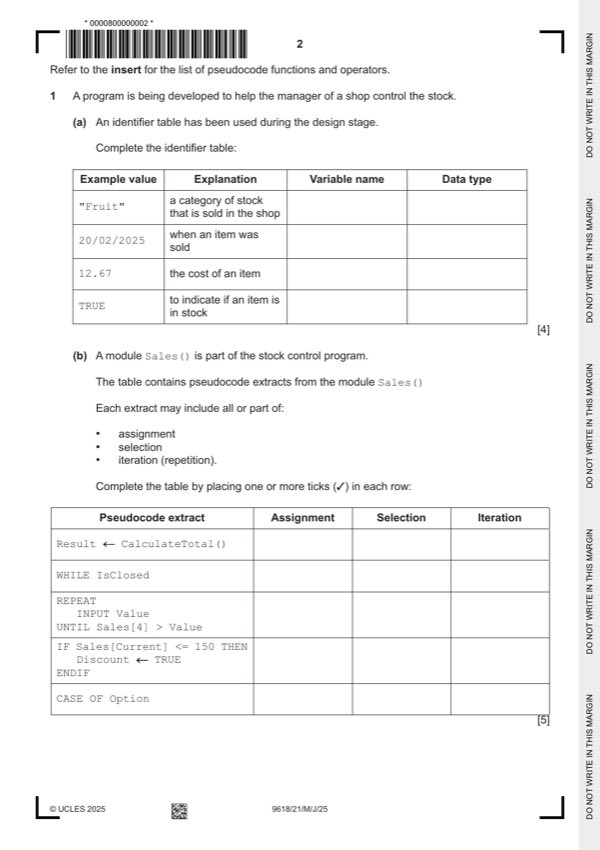

Question 1

Original paper page 2
Part 1(a) — solution
Answer: 4
4
Example Explanation Variable name Data type
value
"Fruit" a category of stock that is Category STRING
sold in the shop
20/02/2025 when an item was sold DateSold DATE
12.67 the cost of an item (Item)Cost/Price REAL
TRUE to indicate if an item is in (Item)InStock BOOLEAN
stock
Mark as follows:
Mark points
- Correct result: 4
Part 1 — solution
mark per row for each variable name and data type
Mark points
- Include the ideas shown in the solution above.
Part 1(b) — solution
Answer: 5
- IF Sales[Current] <= 150 THEN ✓ ✓
Mark points
- IF Sales[Current] <= 150 THEN ✓ ✓
Part 1(c) — solution
Decomposition involves: 3
MP1 Breaking down a problem into sub problems
MP2 In order to explain / understand the process/task of how a (stock control)
can be managed in more detail
MP3 Leading to the concept of the program designed as a series of modules
/ procedures / functions
// or by example of different stock control modules
MP4 Makes the program easier to test / debug
Max 3
Max 2 if no mention of stock control
University Press & Assessment 2025 Page 6 of 14
9618/21 Cambridge International AS & A Level – Mark Scheme May/June 2025
Mark points
- Include the ideas shown in the solution above.
Part 1 — solution
'D'
MP3 'H'
Mark points
- Include the ideas shown in the solution above.